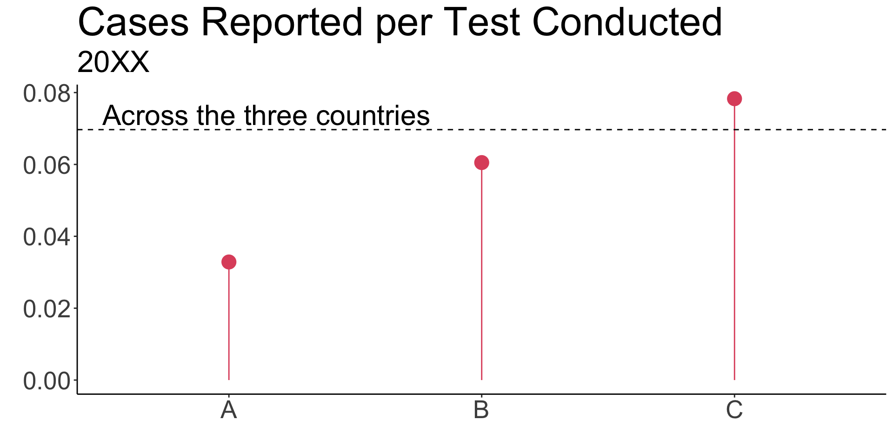
Lecture 5: Expectation and Variance
STA237: Probability, Statistics, and Data Analysis I
Michael Jongho Moon
PhD Student, DoSS, University of Toronto
May 25, 2022
Example: COVID-19
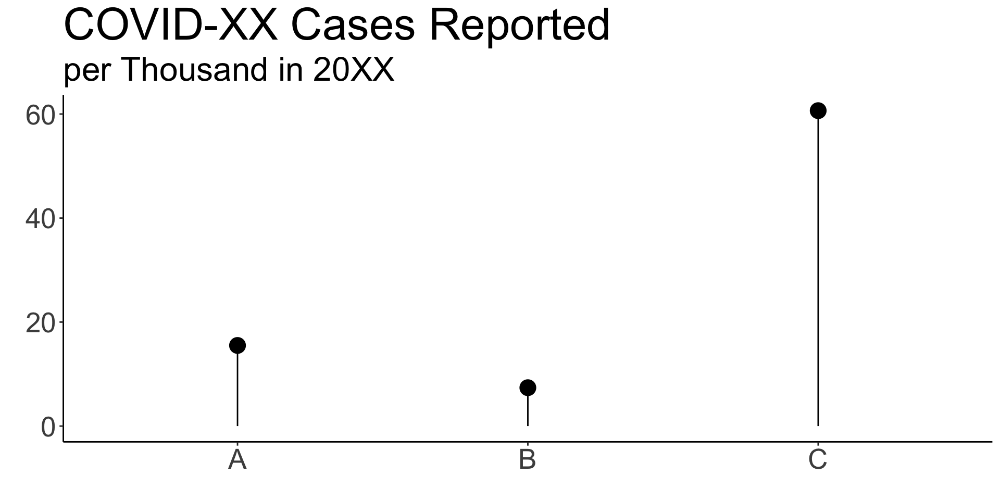

If you had to choose to a place to live in 20XX,
where would you go in one of A, B, and C?

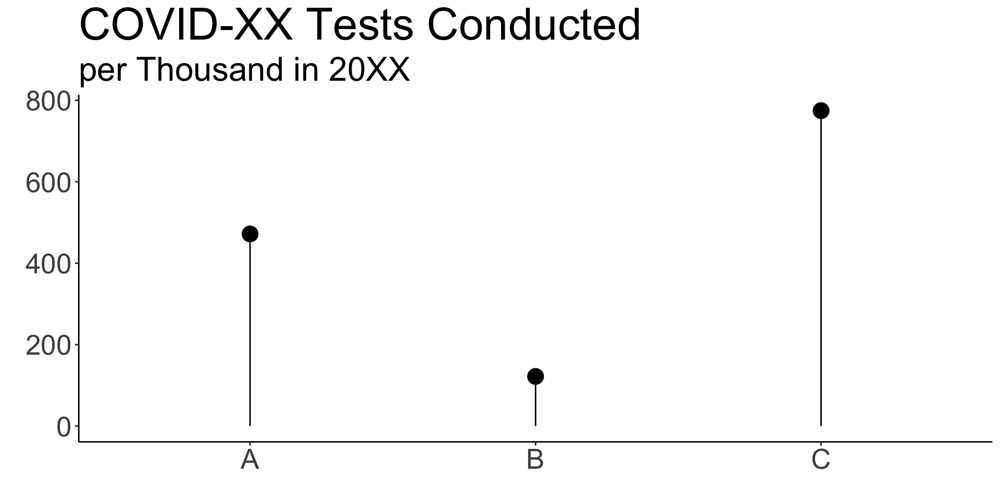
After looking at the data on the number
of tests conducted, does your opinion change?

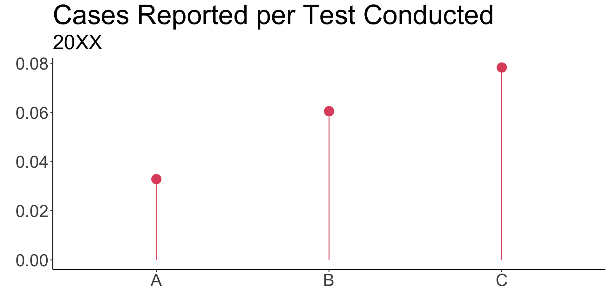
You may wonder whether the low number of cases
in B is due to the fact that they didn’t conduct as many tests.
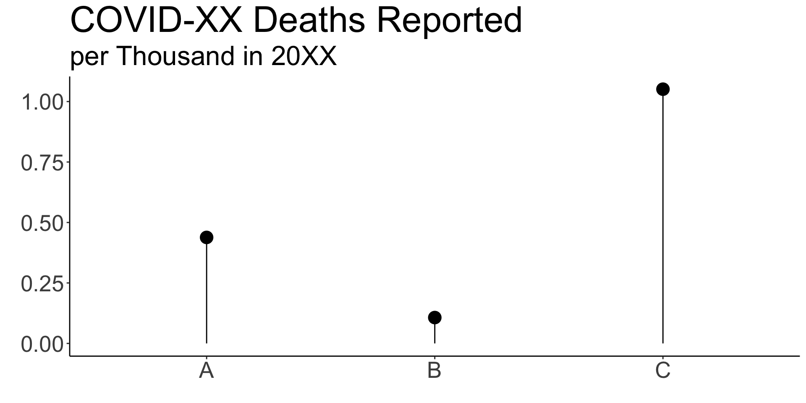

You may further reason that there were unreported
COVID-XX related deaths in B in 20XX.
- Knowing that a country had a low number tests conducted increased our perceived risk in the country
- In other words, we understood the number of reported cases depends on the number of tests conducted
- We also understood that the probability of being infected depends on the country you are in since the conditional probability changes
\[P(\text{Infected}|C) > P(\text{Infected}|B) > P(\text{Infected}|A)\]
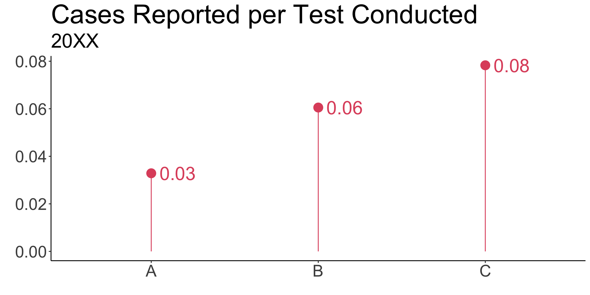
Suppose you receive 100 random COVID-XX test specimens from each country everyday in 20XX.
How many positive cases do you expect from each country per day?
A somewhat naive guess would be
3 from A, 6 from B, and 8 from C.
These values are based on our knowledge of the relative frequencies of positive cases.
\[\text{Expected frequency} = 100 \times \text{Relative frequency}\]
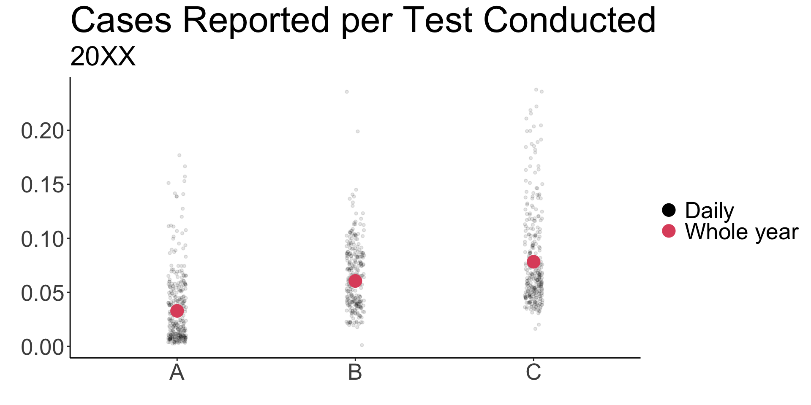
The previous guesses were somewhat naive because
the relative frequencies vary day-by-day.
We will discuss how we capture
the expectation and variability
of a distribution.
Example: Coffee shop
Suppose Michael opens a coffee shop and observes that the number of customers per day follows the following Poisson distribution.

Michael is interested …
How stable is the business?
The distribution can answer …
How many customers can Michael expect on a particular day?
How variable are daily customer counts?
Suppose Michael opens a coffee shop and observes that the number of customers per day follows the following Poisson distribution.
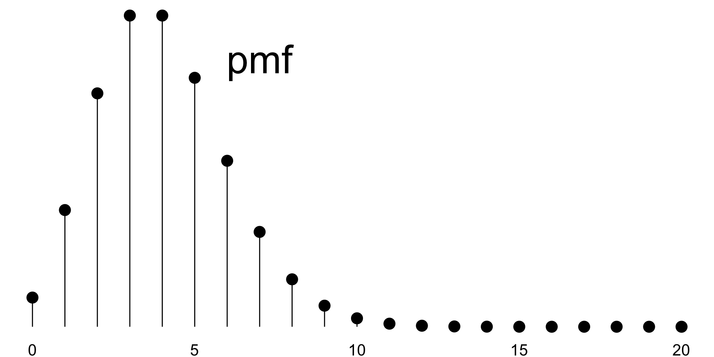
We can extend the idea
from the previous example
to compute the expected
customer count.
Expectation
Expectation of a discrete random variable
The expectation of a discrete random variable \(X\) taking values \(x_1, x_2, \ldots\) and with probability mass function \(p\) is the number given by
\[E\left[X\right]=\sum_{i\in\{1,2,\ldots\}}x_i p\left(x_i\right).\]
- Represents the center of a distribution
- Also called the expected value or mean
- An expectation may be infinite in magnitude
- When \(\sum_{\{i:x_i\ge0\}} x_i p(x_i)=\infty\) and \(\sum_{\{i:x_i<0\}} x_i p(x_i) = -\infty\), an expectation does not exist
Example: Coffee cups
Suppose Michael drinks \(Y\) cups of coffee
per day where \(Y\) is a random variable
that is defined by the probability mass function shown below.
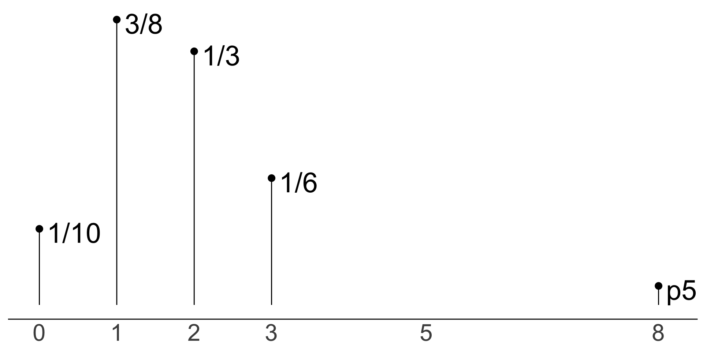
The expected number of cups Michael drinks on any particular day is …
\(E[Y]=\sum_{y\in\{0,1,3,8\}}y p(y)\)
\(=0\cdot\frac{1}{10} + 1 \cdot \frac{3}{8} + 2\cdot\frac{1}{3} + 3\cdot\frac{1}{6} + 8\cdot\frac{1}{40}\)
\(=\frac{209}{120}\approx 1.742\)
Example: Bernoulli distribution
Suppose \(B\sim\text{Ber}(0.7)\).
What is \(E[B]\)?
\(E[B]=\sum_{b\in\{0,1\}}b \cdot p(b)\)
\(=0\cdot(1-0.7) + 1\cdot(0.7)\)
\(=0.7\)
In general, \(E[X]\) for \(X\sim\text{Ber}(p)\) is \(p\).
Mean is the center of the probability mass.
Example: Geometric distribution
Suppose \(G\sim\text{Geom}(p)\).
What is \(E[G]\)?
\(E[G]=\sum_{g\in\{1,2,\ldots\}}g \cdot p(g)\)
\(=\sum_{g=1}^\infty g \cdot (1-p)^{g-1}\cdot p\)
\(=p\left[-\frac{d}{dp}\sum_{g=1}^\infty (1-p)^{g}\right]\)
\(=p\left[-\frac{d}{dp}\left(\sum_{g=0}^\infty (1-p)^{g}-1\right)\right]\)
\(=p\left[-\frac{d}{dp}\left(\frac{1}{p} - 1\right)\right]\)
\(=1/p\)
In general, \(E[G]\) for \(G\sim\text{Geom}(p)\) is \(1/p\).
Mean is the center of the probability mass.
Expectation of a continuous random variable
The expectation of a continuous random variable \(X\) with probability density function \(f\) is the number given by
\[E\left[X\right]=\int_{-\infty}^\infty x f(x) dx.\]
- Represents the center of a distribution
- Also called the expected value or mean
- An expectation may be infinite in magnitude
- When \(\int_0^\infty x f(x) dx=\infty\) and \(\int_{-\infty}^0 x f(x) dx = -\infty\), an expectation does not exist
Example: Continuous random variable
Suppose \(X\) is a continuous random variable with pdf \(f\) defined by
\[f(x)=\begin{cases} 12\cdot x\cdot\left(1-x\right)^2 & \text{when } x\in\left(0,1\right) \\ 0 & \text{otherwise.}\end{cases}\] Compute \(E[X]\).
\(E[X]=\int_{-\infty}^\infty x\cdot f(x) dx\)
\(=\int_{-\infty}^0 x\cdot 0 dx + \int_0^1 12\cdot x^2\cdot\left(1-x\right)^2 dx + \int_1^\infty x \cdot 0 dx\)
\(=12 \cdot \int_0^1 \left(x^2 - 2x^3 + x^4\right) dx\)
\(=\cdots=2/5\)
Example: Exponential distribution
Suppose \(W\sim\text{Exp}(1/2)\).
Compute \(E[W]\).
\(E[W]=\int_{-\infty}^\infty w\cdot f(w) dw\)
\(=\int_{-\infty}^0 w\cdot 0 dw + \int_0^\infty w\cdot \frac{1}{2}e^{-w/2} dw\)
\(=\left[w\cdot \left(-e^{-w/2}\right)\right]_{w=0}^\infty - \int_0^\infty 1\cdot \left(-e^{-w/2}\right)dw\)
- (integration by parts)
\(=\lim_{w\to\infty}\frac{w}{e^{w/2}} - 0 - \left[2e^{-w/2}\right]_{w=0}^\infty\)
\(= 0 - \left(0 - 2\right)\)
- (l’Hopital’s rule for \(\lim_{w\to\infty}w\left/e^{w/2}\right.\))
\(=2\)
In general, \(E[X]\) for \(X\sim\text{Exp}(\lambda)\) is \(1/\lambda\).
Mean is the center of the probability density.
Change-of-variable for expectation
Suppose \(X\sim\text{U}(0, 10)\) and \(Y = X^2\).
Compute \(E[Y]\).
(Dekking et al. Section 7.3)
- Let’s start by expecting the behaviour of \(Y\).
- \(F_Y(a)=P(Y\le a)\) for \(a\in(0,100)\) is …
- \(P(Y\le a)=P(X^2\le a)=P(-\sqrt{a}\le X\le \sqrt{a})\)
- \(=P(-\sqrt{a}\le X\le 0)+P(0< X \le \sqrt{a})\)
- \(=\frac{\sqrt{a}}{10}\)
- Taking the derivative of \(F_Y\), we can get \(f_Y(y)\).
- \(\frac{d}{dy}\frac{\sqrt{y}}{10}=\frac{1}{20\sqrt{y}}\)
- Now, we can directly compute \(E[Y]\).
- \(E[Y]=\int_0^{100}y\cdot\frac{1}{20\sqrt{y}}dy=\frac{100}{3}\)
Note that \(E[Y]=E[X^2]\neq E[X]E[X]\).
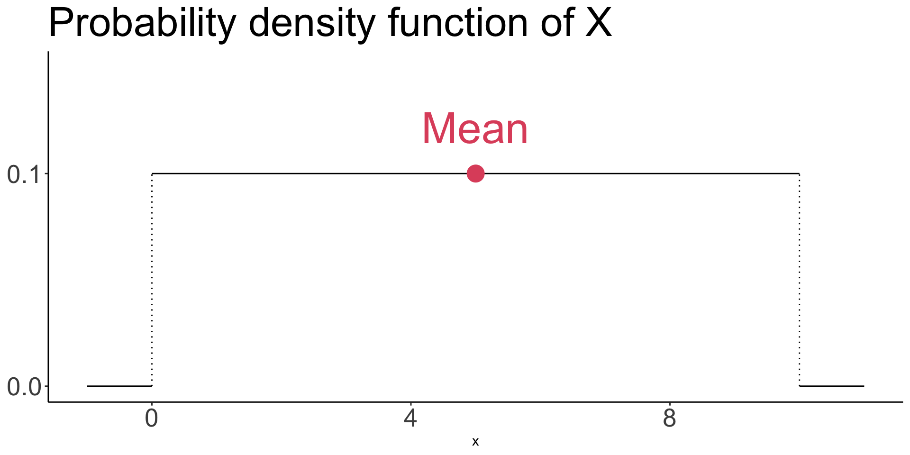
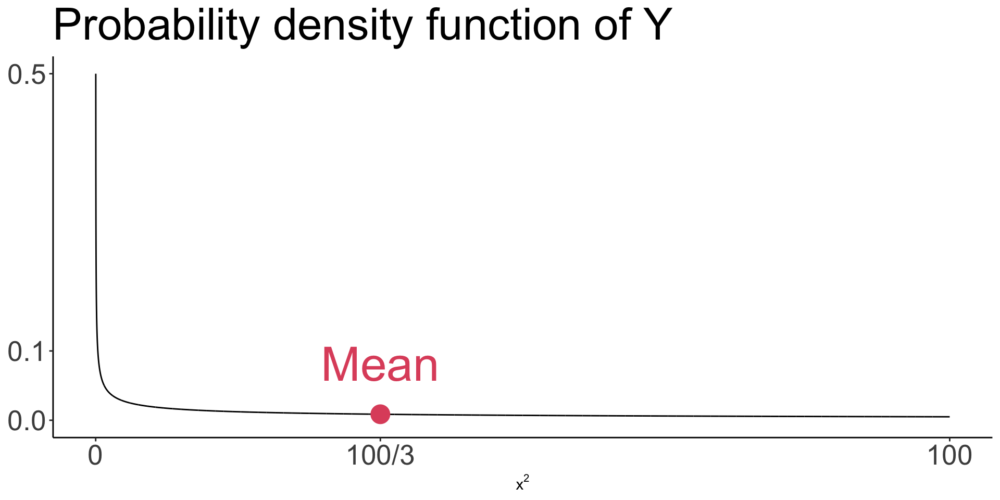
Alternatively, you can compute using
\[E[Y]=E[X^2]=\int_{-\infty}^\infty x^2 f_X(x) dx\]
Change-of-variable for expectation
Let \(X\) be a random variable, and let \(g:\mathbb{R}\to\mathbb{R}\) be a function. The change-of-variable formula states that
\[E\left[g\left(X\right)\right]=\sum_{i}g\left(a_i\right)P\left(X=a_i\right)\]
if \(X\) is discrete taking values \(a_1, a_2, \ldots,\); and
\[E\left[g\left(X\right)\right]=\int_{-\infty}^\infty g(x)f(x) dx\]
if \(X\) is continuous with probability density function \(f\).
This implies,
- \(E\left(rX+ s\right)=r E\left(X\right) + s\) where \(r\) and \(s\) are constants; and
- \(E\left(X - E\left(X\right)\right)=0\) for any \(X\).
Example: Exponential distribution
Suppose \(W\sim\text{Exp}(1/2)\) and \(V=4W + 5\).
Compute \(E[V]\).
- \(E[V]=E[4W + 5] =\int_0^\infty\left(4w + 5\right) f_W(w) dw\)
- \(= 4\int_0^\infty w f_W(w) dw + 5\int_0^\infty f_W(w) dw\)
- \(= 4E[W] + 5\cdot 1 = 13\)
Note that \(E[W]=2\).
Expectation
Other properties
Expectation of any symmetric distribution is the point of symmetry.
e.g., If \(X\sim N(\mu,\sigma^2)\), then \(E(X)=\mu\).
Expectation of a constant is the constant. That is, there is no randomness.
e.g., \(E\left[E\left(X\right)\right]\) for any random variable \(X\) is \(E(X)\).
Variance
Variance
The variance \(\text{Var}(X)\) of a random variable \(X\) is the number defined by
\[\text{Var}(X)=E\left[\left(X-E\left[X\right]\right)^2\right].\]
- It is the mean of squared distance from the mean
- It measures the spread around mean
- \(\text{Var}(X)\ge 0\) for any (random) variable \(X\)
Alternatively …
- \(\text{Var}(X)=E\left[\left(X-E\left[X\right]\right)^2\right]\)
- \(=E\left[X^2 -2XE\left(X\right) + \left(E\left[X\right]\right)^2\right]\)
- \(=E\left[X^2\right] - E\left[2XE\left(X\right)\right] + E\left[\left(E\left[X\right]\right)^2\right]\)
- \(=E\left[X^2\right]-2E\left(X\right)E\left[X\right] + \left(E\left[X\right]\right)^2\)
- \(=E\left[X^2\right]-\left(E\left[X\right]\right)^2\)
All you need is
\(E(X^2)\text{ & }E(X)\)
to compute
the variance.
Example: Bernoulli distribution
Suppose \(B\sim \text{Ber}(p)\). What is \(\text{Var}(B)\)?
- \(E[B]=p\)
- \(E[B^2] = 0^2 \cdot (1-p) + 1^2 \cdot p = p\)
- \(\text{Var}(B) = p - p^2 = p(1-p)\)
Variance
Properties
Variance of a constant is zero.
i.e., \(\text{Var}(a)=E\left[a^2\right] - \left(E\left[a\right]\right)^2\)
\(=a^2 - a^2 = 0\).
For any random variable \(X\), and constants \(r\) and \(s\),
\[\text{Var}(rX + s)=r^2\text{Var}(X)\]
Example: Bernoulli distribution
Suppose \(B\sim \text{Ber}(p)\) and \(H=3B+5\). What is \(\text{Var}(H)\)?
\(E[H]=3E[B]+5=3p + 5\)
\(E[H^2] = E[(3B+5)^2]=9E[B^2] + 15E[B] + 25=9p + 15 p +25=24p + 25\)
\(\text{Var}(H) = 24p + 25 - (3p + 5)^2\)
\(\phantom{VAR(H)}=24p + 25 - 9p^2 - 15p - 25\)
\(\phantom{VAR(H)}= 9\left(p-p^2\right)\)
\(\phantom{VAR(H)}=9p(1-p)=3^2\text{Var}(B)\)
\[\text{Var}(H)=3^2\text{Var}(B)\]
Standard deviation
The standard deviation \(\text{sd}(X)\) of a random variable \(X\) is the number defined by
\[\text{sd}(X)=\sqrt{\text{Var}\left(X\right)}.\]
- Another measure of spread
- Requires \(\text{Var}(X)\) to compute the standard deviation
- The standard deviation is in the same unit as the random variable
Practice questions
- Exercises from Dekking et al. Chapter 7: All
- Derive mean and variance of \(X\sim N(\mu,\sigma^2)\)
- Derive variance of \(Y\sim\text{Exp}(\lambda)\)
Simulation in R worksheet
- Follow this link to open the worksheet
Term test details
- On May 30 from 9 am to noon
- In EX200, Exam Centre
- A 2-sided hand-written aid without any derivations is allowed
© 2022. Michael J. Moon. University of Toronto.
Sharing, posting, selling, or using this material outside of your personal use in this course is NOT permitted under any circumstances.